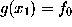

Once a density function is computed by SOLVATE and the parameters defining f are stored in the file boundary.lis, any MD-program can access that file and use f to compute boundary forces acting on water molecules near the surface of the solute/solvent system. This force is always a function of the distance to that surface, which therefore must be computed efficiently. In this section we describe how this can be done to an accuracy sufficient for most purposes.
For the computation of the distance r between the location of a water
molecule, , and the surface point closest to
 we first have to find
that surface point. We assume that, from the construction of f
as a sum of few gaussians, this surface point is sufficiently
close to the intersection
of a line through
we first have to find
that surface point. We assume that, from the construction of f
as a sum of few gaussians, this surface point is sufficiently
close to the intersection
of a line through  , the direction of which is given by the
gradient , with the surface
. So we have to compute that intersection point.
, the direction of which is given by the
gradient , with the surface
. So we have to compute that intersection point.
Since this cannot be done analytically, and to avoid a possible (but slow)
iterative method, we approximate f for points on the line defined above
beween  and the intersection point. In that region,
f (solid white line) is
by construction (a sum of gaussians, red, dashed lines)
dominated by the gaussian next to
and the intersection point. In that region,
f (solid white line) is
by construction (a sum of gaussians, red, dashed lines)
dominated by the gaussian next to  (thin, vertical line) and thus
can be approximated by a simple (one-dimensional) gaussian function g
(white dashed line),
(thin, vertical line) and thus
can be approximated by a simple (one-dimensional) gaussian function g
(white dashed line),
The parameters k,
a, and
, which define
g, are obtained
from the value ,
the gradient  ,
as well as the second derivative along the gradient,
(where J
is the Jacobian matrix of
f at
,
as well as the second derivative along the gradient,
(where J
is the Jacobian matrix of
f at
 ),
),
The intersection point , approximated by requiring , can now be calculated analytically, and the distance r we are interested in reads
As a rule of thumb, all distances required in an MD-simulation are computed with an error smaller than 0.2 Å, which becomes even smaller (0.02 Å) for water molecules close to the surface.
Through a similar approximation, also the average curvature of the solvent at the intersection point, which may enter the boundary forces as a second parameter, can be obtained.
{kind=link}